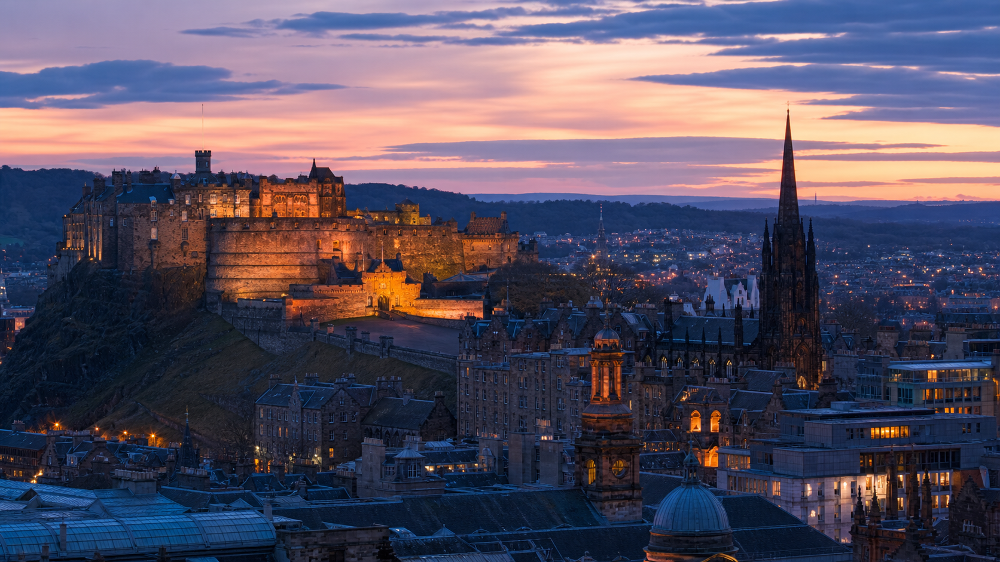
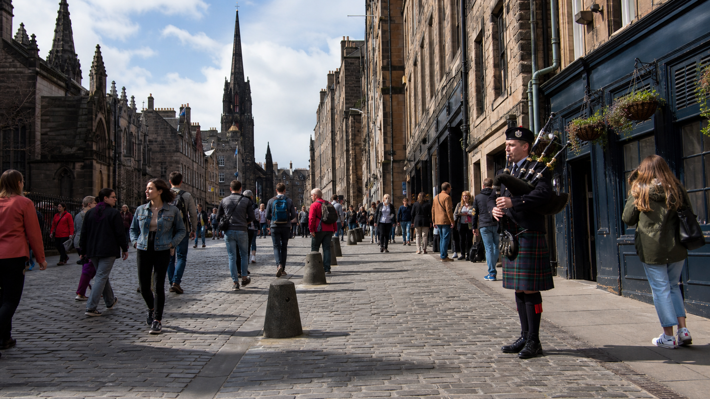
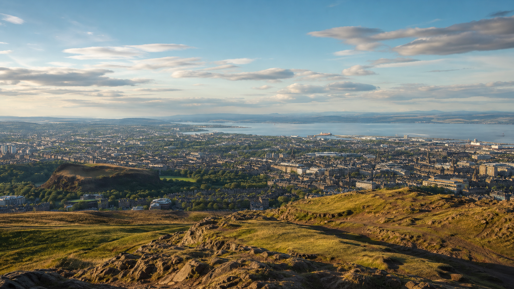
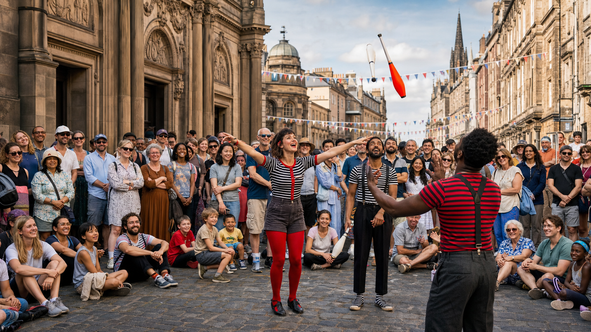
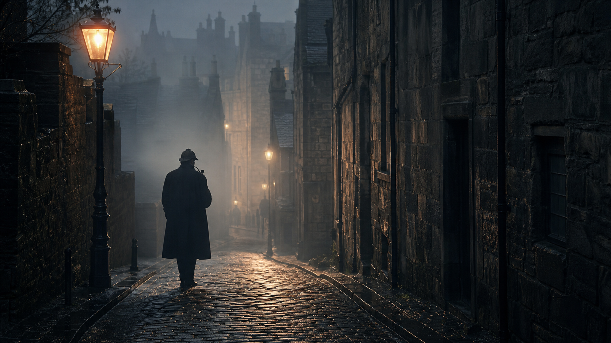
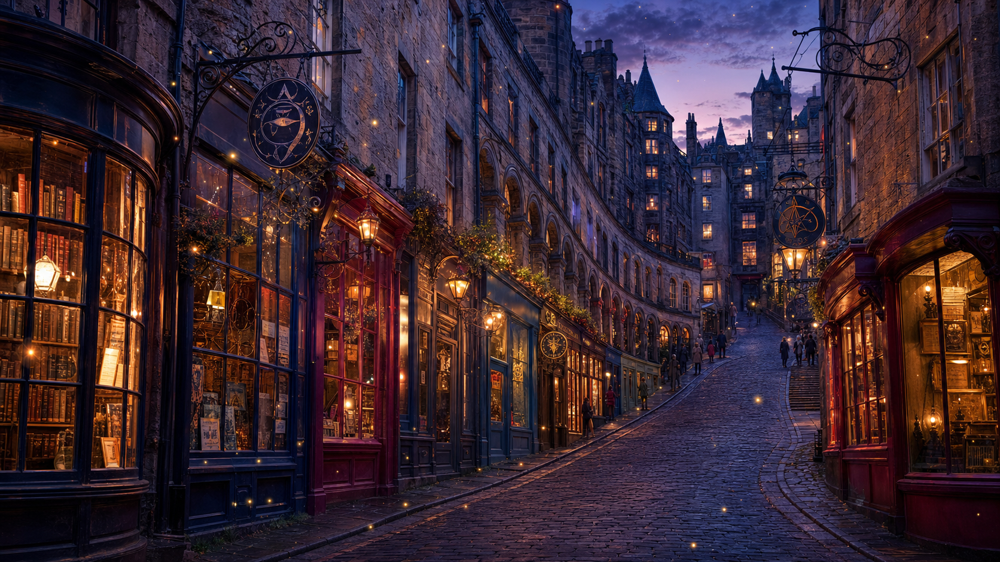

エディンバラってどんな街?
エディンバラはスコットランドの首都。フォース湾のほとり、古代の火山活動が生んだ丘の上に築かれた街です。 中世の面影を残す旧市街(Old Town)と、18〜19世紀のジョージアン様式が美しい新市街(New Town)は、 1995年にユネスコ世界遺産に登録されました。 かつて石炭の煙が立ちこめたことから「Auld Reekie(煙の古都)」、 丘と壮麗な建築から「北のアテネ」とも呼ばれます。
エディンバラ城

岩山の上にそびえるスコットランドの象徴
死火山の岩山「キャッスルロック」の頂に建つエディンバラ城は、スコットランドで最も来場者の多い観光名所。 スコットランド王家の居城として歴史の舞台となり、王冠などの戴冠宝器(Honours of Scotland)や 運命の石(Stone of Destiny)が収められています。街のどこからでも見えるランドマークです。
ロイヤル・マイル

城と宮殿を結ぶ約1.8kmの目抜き通り
旧市街の背骨にあたる通りで、丘の上のエディンバラ城から麓のホリールード宮殿までを結びます。 全長は約1.8km(約1マイル=「ロイヤル・マイル」の名の由来)。 石畳の道沿いには中世の建物、聖ジャイルズ大聖堂、パブや土産物店が並び、 バグパイプの音色が響く、エディンバラ観光の中心地です。
アーサーの玉座(Arthur's Seat)

市内にそびえる死火山からの絶景
市街地のすぐそば、ホリルード公園にある標高約251mの死火山の丘。 気軽なハイキングで登れて、山頂からは旧市街・新市街、カールトン・ヒルの記念碑群、 そしてフォース湾までを一望できます。街なかで自然と絶景を楽しめるのがエディンバラの魅力です。
エディンバラ・フェスティバル・フリンジ

世界最大のパフォーミングアーツの祭典
毎年8月に開催される世界最大の舞台芸術フェスティバル。1947年にエディンバラ国際フェスティバルの 「周縁(fringe)」で始まったのが起源で、審査なしで誰でも参加できるオープンアクセス形式が特徴です。 2025年には約3,900の演目・5万回超の公演が300以上の会場で行われ、260万枚以上のチケットが販売されました。 期間中は街全体が巨大な劇場になります。
シャーロック・ホームズ生誕の地

名探偵はエディンバラで生まれた
シャーロック・ホームズの生みの親、アーサー・コナン・ドイルは1859年5月22日、 エディンバラのピカーディ・プレイス11番地で生まれました。 エディンバラ大学で医学を学び、そこで出会った外科医ジョセフ・ベル博士—— 鋭い観察と論理的推理で患者を診断する名医——こそが、ホームズのモデルだとドイル自身が語っています。 つまり、あの推理術はエディンバラの医学教育から生まれたのです。 生家跡の近くのピカーディ・プレイスには、1991年に建てられたホームズの銅像が立っています。
ハリー・ポッターが生まれた街

J.K.ローリングが物語を書き上げた場所
J.K.ローリングはエディンバラのカフェで『ハリー・ポッター』第1作の多くを執筆しました。 有名なのは義弟が経営していたニコルソンズ・カフェ(現在は「Spoon」)と、 「ハリー・ポッター誕生の店」を掲げるジ・エレファント・ハウス(2021年の火災後、2025年末に再オープン)。 そして最終巻『死の秘宝』は、バルモラル・ホテルの552号室——現在は「J.K.ローリング・スイート」——で書き上げられました。
ファンの聖地はほかにも。カラフルな坂道ヴィクトリア・ストリートは「ダイアゴン横丁のモデル」と言われ、 グレイフライアーズ墓地には「トーマス・リデル(Thomas Riddell)」や「マクゴナガル」の名が刻まれた墓石があります。 ただしローリング本人は「作中の場所はほぼすべて想像上のもの」とモデル説を否定しており、 それも含めて街歩きが楽しい"魔法の街"です。
旅のヒント
- ベストシーズン: 5〜9月。8月はフリンジで最高に賑わう反面、宿は早めの予約が必須。
- アクセス: エディンバラ空港から市内へはトラムで約30分。
- 天気: 変わりやすいので、夏でも重ね着とレインジャケットを。
- 名物: ハギス、スコッチウイスキー、ショートブレッドはぜひ。